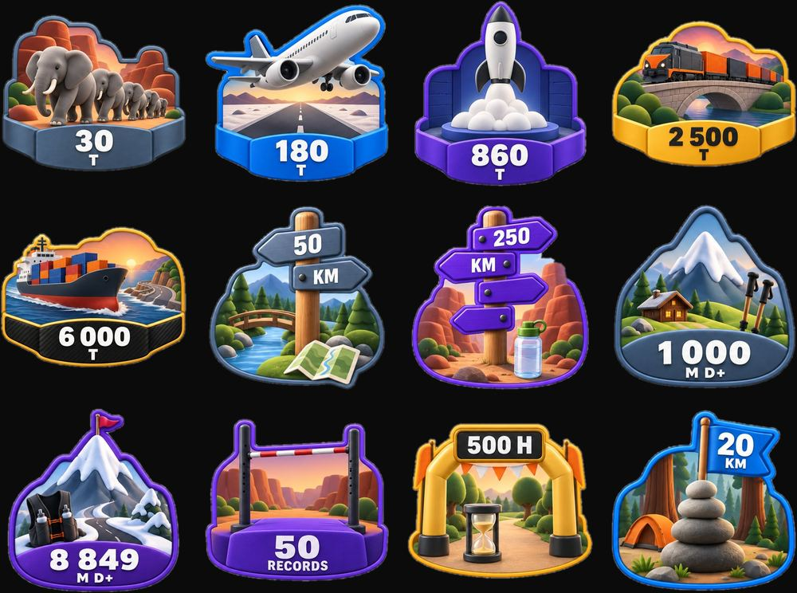

TRAK · Start-up · Depuis mars 2026
Une start-up construite avec des agents IA.
Avec mon frère, je construis une application sportive. Du parcours utilisateur aux moteurs de calcul, je conçois le produit et j’organise sa production avec l’IA.
- Rôle
- Cofondateur et CEO
- Statut
- Application en pré-lancement
- Programme
- Station F Fighters S26


≈ 480
écrans conçus en trois semaines
1 000+
agents IA lancés en trois jours
Sélectionnée au programme
Station FFighters S26Une équipe d’agents
Contexte partagé, agents spécialisés et documentation : j’organise la production.
Du design au code
Parcours UX et interfaces, puis front-end, back-end, données et logique métier.
Chaque résultat contrôlé
Une revue humaine avant chaque mise en production.

Ce système de travail, je l’installe dans votre entreprise.
Projet suivant
LYNEWED : une plateforme livrée, un fondateur autonome